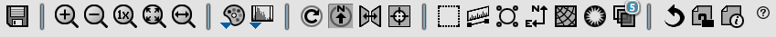
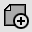
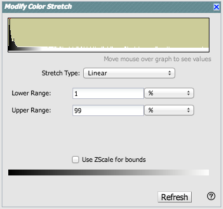
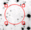
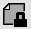
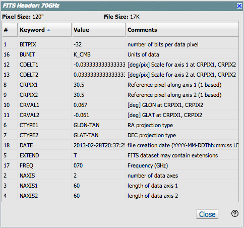
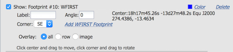
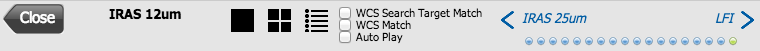
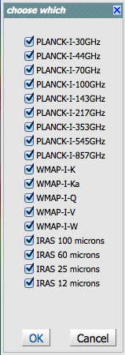
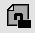

Visualizing data in the NASA Planck Archive (NPA)
Nearly all of the images shown in the NPA are real FITS files, and you
can interact with them as such. (The sole exception is the Planck
ERCSC images, which really are JPGs. All the other images are really
FITS.)
Contents of page/chapter:
+Overview
+Basic FITS Viewer
+Visualization Tools -- Image Options
+Footprints -- overlaying markers
+Breaking out of the pane (and going back)
+World Coordinate System (WCS) Alignment
Once a search is complete, the lower portion of the results page (the
image display pane) is populated with rows of images. (See the results section for more details.)
Note that nearly all the images that are displayed are FITS files, not JPGs
or PNGs, so you can interact with them using the tools described
below. (The sole exception is ERCSC images from Planck, which really
are JPGs. All the other images are really FITS.)
All of the interactive image visualization tools work the same basic
way, and here we describe these basic options, in roughly the order
in which you might encounter them in the window.
- Interactive exploration of the image with the mouse.
- Move your mouse over any image that is loaded into the viewer.
Details about the image and, specifically, the pixel beneath your
mouse cursor, appear along the top of the window with a variety of
useful items. Some information is updated in real time (such as
coordinates); some information (such as flux densities) is updated
when you stop moving your mouse for a second or two. The image can be
interactively investigated in this fashion.

You can make it 'stick' on a
particular place on the image -- tick the "Lock by click" box and then
click on the image at your desired location.
The orientation of the image is given with a compass rose on the
right, next to a zoomed-in view of the image under your cursor. If you
can't see all of these two windows, enlarge your browser window
slightly.
- Finding out more about each image.
- Each image indicates the its origin on the top of each image. Some
of this information (like the title of the image) is also given in the
interactive exploration region described immediately above. This
region also includes additional information about the image (such as
the pixel scale and orientation).
 Breaking the image out of the pane.
Breaking the image out of the pane.
- This icon will expand the corresponding visualization window into
a larger window covering the results page. There is more on this below.
There is a toolbox along the top of the IRSA Viewer window:

from which you can select a
variety of options, now described. Letting your mouse hover over any of
these icons will result in a "tool tip" that appears in order to
remind you what the icon does. This information is also dynamically
updated just to the right of the toolbox itself.
 Saving the image.
Saving the image.
- The diskette icon will allow you to save the current image as a
FITS or PNG or Regions file to your local disk. Note that you
control where the file is saved on your disk through your browser;
your browser may be configured to store all downloads in a particular
location on your disk.
Saved FITS images will not save the color stretches or overlays; it
will just save the underlying FITS image. Saved PNG files WILL
include any overlays or annotations you have placed on the image, but
will not include the underlying FITS image. Saved regions files will
not save the underlying image, but will just save the overlays as a
DS9 Regions file. See the DS9 website  for more information on the syntax of
these DS9 region files.
for more information on the syntax of
these DS9 region files.
Note that you can save the original or a cropped version of the
FITS file; see the select region icon below to crop, and then save the
FITS image.
Note also that if you overlay a catalog
consisting of tens of thousands of sources, to save bandwidth, what is
overlaid on your image at some locations may be a larger symbol
representative of several sources at that location; if you save a
regions file from the catalog overlay, then you will have fewer
sources in the regions file than you have in the full catalog.
- Selecting a new image
- Depending on what you're looking at, you may or may not have this
icon. By selecting this icon, you can change which images are used for
each color plane, or for the background.
 Zooming in or out.
Zooming in or out.
-
Clicking on these magnifying glass icons zooms in or out of the image.
The readout of how many times you are zoomed appears at the top of the
visualization window.
If you click zoom in or out rapidly, a pop-up window appears to allow
you to more rapidly select the zoom level you want. Select the desired
level, or click on the blue 'x' in the upper right to make the window
go away. Here is an example:

Note that there is a maximum (or minimum) allowed zoom level. A
notification will appear when you have reached the maximum (or
minimum) allowed zoom level for a given image. To enlarge things more
than that, please repeat your search to obtain new images with smaller
(or larger) spatial extent.
 Zooming to a 1-to-1 size.
Zooming to a 1-to-1 size.
- Clicking this icon will zoom the image such that one pixel in the
image is one pixel on your screen.
 Fit image to screen or fill
screen
Fit image to screen or fill
screen
-
These two icons are designed to maximize the available space in your
browser window. The first one automatically picks a zoom level such
that the image entirely fits within the available space. The second
one automatically picks a zoom level such that the image fills as much
of the available space as possible (e.g., it is zoomed such that short
axis of the window is filled with the image, whether that short axis
is left-right or up-down).
By default, the images that are returned are frequently but not always
centered on your search target. Clicking on these icons let you see
the whole image that is returned, whether or not it is centered on
your target.
 Changing the color table.
Changing the color table.
- This icon enables you to change the color table of the displayed
image. When you click the button, a pull-down menu appears with a wide
variety of color table choices.Select your new color table from the options shown:

For the IRAS and WMAP cutouts, by default we use the color table "For
false color", 5th from the top in color tables. Here is the detailed
explanation of that default color table: Starting with black, fade up
in blue to index 68. At index 17 start to fade in green along with
the blue. At index 68 continue fading up the green while fading the
blue down. At index 102 start fading in red while continuing to fade
out blue. Continue to fade up red until index 187 - at this point,
green is almost gone and blue is completely gone. At index 204 it is
red only. From index 204 fade in both green and blue until all three
colors are on full at index 255.
 Changing the color table
stretch.
Changing the color table
stretch.
- This icon enables you to change the color table stretch of the
displayed image. When you click the button, a pull-down menu appears
with a variety of choices. You can choose from a set of pre-selected
options:

If you pick the
first one, "color stretch", you can customize the stretch. A pop-up
window appears with a histogram of the values in the image, and you
can change the stretch type and range.

If you pick a color stretch from the
pre-defined options, the pop-up window reflects this change. (Ex: pick
'Linear stretch to 99%'. Go back to "color stretch". Note that it has
filled out the stretch type and ranges to reflect the current choice.
Then -- either with the pop-up window still up or not -- go back and
pick a different pre-defined stretch from the standard options. Note
that the values in the pop-up change to reflect this current
choice.)
 Rotating the image to any
angle
Rotating the image to any
angle
- This feature allows you to rotate the image to any angle of your
choice, in degrees. It will rotate the image counter-clockwise (to the
left) from the current view, not necessarily the original image. For
example, entering "45" in the rotation pop-up and hitting "rotate"
will rotate the image 45 degrees counter-clockwise relative to its
original orientation. Then selecting the icon again, and entering
"180" in the pop-up (followed by hitting "rotate") will rotate the
image an additional 180 degrees counter-clockwise. To exit the pop-up
without making further changes, hit the blue 'x' in the upper right of
the pop-up.
 Rotating the image so that North is
up.
Rotating the image so that North is
up.
- Images retrieved from FinderChart are commonly already oriented
such that North is up, or close to it. However, when interactively
investigating images, or in certain situations, you could find
yourself in a situation where North is not necessarily up. Clicking
this icon will orient the selected image so that North is up.
 Flipping the image on the y-axis.
Flipping the image on the y-axis.
- Clicking on this icon flips the image on the y-axis.
 Re-center the image.
Re-center the image.
- Clicking this icon will re-center the image on the center of the
last query, or on the center of the image.
 Selecting a region.
Selecting a region.
- When you click this icon, at first, nothing seems to happen.
(There is a notice with brief instructions that appears on the lower
left of your browser window.) You can now click and drag in the
image, selecting a box on the image. This box can be resized by
grabbing and dragging the corners of the box. You can make a new box
right away by holding down the shift key and clicking and dragging to
select a new box. When you have selected a region of the image,
additional icons appear above the image:
 These icons will allow you to (from left
to right) crop the image to the selected region, obtain statistics on
the region, select the catalog sources overlaid on the image within
the region, or filter the overlaid catalog down to the enclosed
sources. (The last two options will only appear if you have a catalog
overlaid.) You can save the cropped FITS image via the save icon
(described above). The statistics option results in a pop-up that
looks something like this:
These icons will allow you to (from left
to right) crop the image to the selected region, obtain statistics on
the region, select the catalog sources overlaid on the image within
the region, or filter the overlaid catalog down to the enclosed
sources. (The last two options will only appear if you have a catalog
overlaid.) You can save the cropped FITS image via the save icon
(described above). The statistics option results in a pop-up that
looks something like this:

Selecting sources highlights them in the catalog list. When you
impose a filter, the filters icon changes above the catalog to
indicate that there is a filter applied (in this case just one filter:
 ). To clear the filters, click on
the cancel filters icon (which also appears after you impose filters):
). To clear the filters, click on
the cancel filters icon (which also appears after you impose filters):
 .
.
 Measuring a distance.
Measuring a distance.
- When you click this icon, at first, nothing seems to happen.
However, you can now click and drag to draw a line on the image, and
the length of the line is displayed (in the middle of the line). The
units for the measured distance (and the color of the overlay) can be
changed from the "layers" icon (described below). You can
calculate the difference in RA and Dec separately via the layers icon
as well; find the layer associated with the distance measurement and
tick the "offset calculation" box. When it displays the offset
calculation, it will give you the angle in degrees in one corner, and
the length of the line segment in the RA and Dec directions, in the
units you have specified.
 Put a marker on the image.
Put a marker on the image.
- When you click this icon, a pull-down menu appears with several
possible options:

The first
overlay choice (simply called 'marker') is a red circle. Initially, it
appears in the center of the images, and is meant to be moved to
wherever you first click in the image. It looks like this: . The small circles in the four corners are
"handles" -- you can grab the handles to resize the circle. You can
also drag it to any location in the image. You can change the color
of the marker (and add a label to it) via the "layers" icon (described
below). You can also remove this layer via the layers icon. There are
several additional options in the pulldown, enough that they have
their own section below.
 Show the directions of North and East
Show the directions of North and East
- When you click this icon, arrows appear on the image showing
which direction is North and which is East.
 Add a coordinate grid.
Add a coordinate grid.
- Click on this icon to overlay a coordinate grid on the image.
Click it again to remove it. Customize the units of the grid (to,
e.g., Galactic coordinates) via the "layers" icon (described
below).
 Read in a DS9 Regions file
Read in a DS9 Regions file
- When you click this icon, you get a pop-up window from which you
can read in a DS9 regions file from your local disk. See the DS9 website for more information on the syntax of
these DS9 region files. The supported regions are text, circle, box,
polygon, line, and annulus. To make this window go away without doing
anything, click on the blue 'x' in the upper right of the pop-up.
 Viewing/changing the layers on the
image.
Viewing/changing the layers on the
image.
- If you've been following along by trying these various options,
you now have an image with a lot of annotations on it. The number that
appears in blue over the layers icon tells you at any given time how
many layers you have on the currently selected image. If you click
this icon, you will get a pop-up window with a list of all the layers
you have on top of the image. From the pop-up, you can turn layers off
and on, at minimum, but you can often also change exactly what is
displayed and what colors get used for it. To add new things,
you need to go to other options within the toolbar. Here is an example
of a well-populated layers pop-up.

To change colors of a layer, click on
the 'colors' link to be taken to a new pop-up from which you can
select a new color. To delete a layer, click on 'delete'. Some layers
appear do not have that option; to remove that layer, click on the
corresponding icon from which you added that feature. To make this
pop-up window go away, click on the blue 'x' in the upper right of the
pop-up.
 Restoring everything to the
defaults
Restoring everything to the
defaults
- If you've played around a lot with the image, you may want to undo
everything you've done. Click this button to restore everything to
their original default values. Some layers may persist; remove them
via the layers icon described above.
- Lock/unlock images
- For the NPA interface, since you get by default several
multi-wavelength views of the same source, this tool has "lock images"
turned on by default. In other words, all the images that you have
loaded are linked together for zooming, scrolling, etc. You can click
on this icon to turn off this linkage among the images, enabling you
to zoom/rescale/etc. images on an individual basis. Click it again to
re-enable it. This option is discussed in more detail in the WCS section below.
 Viewing the FITS header.
Viewing the FITS header.
- This icon will display a pop-up window with the FITS header of the
background image. If you click on the columns of the FITS header in
the pop-up, it will sort the keywords alphabetically by that column.
This is useful for finding individual keywords in particularly densely
populated FITS headers. Click the header again to sort in
reverse-alphabetical order, and a third time to return to the default
order. Here is an example of a sorted FITS header. Note that the first
column is the original order of the keywords. To make it go away,
click on the blue 'x' in the upper right of the pop-up.

 Getting help.
Getting help.
- Clicking on this icon takes you to this help page.
Footprints
The marker icon () has a pull-down menu with
several possible options:
We
now describe these options here.
For each of these choices, the markers appear initially in the center
of the loaded images. The first mouse click you make in any of the
images will move the marker to that location.
Each of these marker choices, when overlaid and/or selected as
'active', has a large circle surrounded by 4 small circles located at
the edge of the large circle. These so-called "handles" allow you to
resize and/or rotate the marker, depending on the nature of the
marker. These handles only appear when the marker is selected as
active, and they are in the same color as the marker itself.
From this marker icon pull-down, by default, it comes up with each
option as "show". When you select that option, the marker appears in
the layers pop-up (described above), from which you can hide/show the
marker, or change its color. Note that after you add a marker, the
pulldown menu here changes for that marker menu option to be "hide
all" in front of that marker menu option. You can add multiple copies
of the same marker using the layers pop-up (described generally
above). You can also add a label to the marker from the layers
pop-up.
The first overlay choice (simply
called 'marker') is a red circle.
The remaining markers are all footprints from other space-based
telescopes: HST, JWST, and Nancy Grace Roman Space Telescope (WFIRST).
These footprints are derived from information provided via MAST (see
http://gsss.stsci.edu/webservices/footprints/help.html
.) For JWST and Roman in
particular, they are pre-launch values.
 HST focal plane footprint.
Consult the HST
documentation for specifics on which apertures are which. The
footprint can be moved or rotated. Click and drag the center of the
footprint. A circle appears with four small circles ("handles") around
it. Grab and drag the small circles to rotate it, or drag the big
circle to move it. Note that if you overlay the
footprint on a very small image, nothing will appear to have happened.
You need at least a 45 arcmin image to comfortably see the footprint.
Change the color, delete, or add more copies of the HST footprint from
the layers pop-up:
HST focal plane footprint.
Consult the HST
documentation for specifics on which apertures are which. The
footprint can be moved or rotated. Click and drag the center of the
footprint. A circle appears with four small circles ("handles") around
it. Grab and drag the small circles to rotate it, or drag the big
circle to move it. Note that if you overlay the
footprint on a very small image, nothing will appear to have happened.
You need at least a 45 arcmin image to comfortably see the footprint.
Change the color, delete, or add more copies of the HST footprint from
the layers pop-up:

JWST focal plane footprints.
| JWST Footprint | Description |
|---|
 | JWST FGS Preliminary footprint |
 | JWST MIRI Preliminary footprint |
 | JWST NIRCAM Preliminary footprint |
 | JWST NIRSPEC Preliminary footprint |
 | JWST NIS Preliminary footprint |
 | JWST entire Preliminary footprint (cross is boresight) |
Note that if you overlay the footprint on a very
small image, nothing will appear to have happened. You need at least a
30 arcmin image to comfortably see the footprints, especially the
entire JWST focal plane. Please consult the JWST documentation for details
about the footprints. In all cases, if the footprint is 'active', a
circle near the middle of the footprint will appear with four small
circles ("handles") around it. Grab and drag the small circles to
rotate it, or drag the big circle to move it. Change the color,
delete, or add more copies of the footprints from the layers pop-up,
one example of which is given here:

 Nancy Grace Roman Space Telescope
(WFIRST) focal plane footprint. As above, the footprint can
be moved or rotated. Click and drag the boresight (the cross hairs),
which appears by default to the upper right of the array of squares.
A circle appears, centered on the boresight, with four small circles
("handles") around it. Grab and drag the small circles to rotate it,
or drag the big circle to move it. Note that if you
overlay the footprint on a very small image, nothing will appear to
have happened. You need at least a 60 arcmin image to comfortably see
the footprint, and even then you will probably have to click and drag
to see the entire footprint. Consult the Roman documentation for
specifics on the apertures. Change the color, delete, or add more
copies of the Roman footprint from the layers pop-up:
Nancy Grace Roman Space Telescope
(WFIRST) focal plane footprint. As above, the footprint can
be moved or rotated. Click and drag the boresight (the cross hairs),
which appears by default to the upper right of the array of squares.
A circle appears, centered on the boresight, with four small circles
("handles") around it. Grab and drag the small circles to rotate it,
or drag the big circle to move it. Note that if you
overlay the footprint on a very small image, nothing will appear to
have happened. You need at least a 60 arcmin image to comfortably see
the footprint, and even then you will probably have to click and drag
to see the entire footprint. Consult the Roman documentation for
specifics on the apertures. Change the color, delete, or add more
copies of the Roman footprint from the layers pop-up:

Breaking out of the pane (and going back)
By default in the NPA, the search results are broken up
into panes. For some purposes, it is useful to view the images (or
the table) as large as possible. On the upper right of either the
image pane (or the table pane), there is an expand icon . Clicking on it will expand the images (or
table) into a larger window, with the selected image appearing first.
From this view (with the images), you now have some additional options
that appear near the top of the new window.

The large "Close" arrow at the left enables you to return back to the
pane view. This arrow is always available in these expanded views.
Next, the currently displayed band (sometimes using abbreviations) and
magnification factor is shown. Zoom in or out using the visualization
toolbox described above.
Next, there is a cluster of icons  that
portray (in icon form) the different views you can have of the images
you have loaded. The first icon (the big square) denotes "show one
image at a time." The second icon (the cluster of four squares)
denotes "show smaller images of all the images I have loaded, but
still take up the whole browser window with the set" (as opposed to
going back to the window panes). Depending on what you have been
doing in your session to this point, you may have more than one image
loaded, plus a plot from the catalog. Perhaps you wish to see, e.g.,
just two of the images tiled? Click on the last, blue "list" icon in
this cluster to bring up a pop-up window:
that
portray (in icon form) the different views you can have of the images
you have loaded. The first icon (the big square) denotes "show one
image at a time." The second icon (the cluster of four squares)
denotes "show smaller images of all the images I have loaded, but
still take up the whole browser window with the set" (as opposed to
going back to the window panes). Depending on what you have been
doing in your session to this point, you may have more than one image
loaded, plus a plot from the catalog. Perhaps you wish to see, e.g.,
just two of the images tiled? Click on the last, blue "list" icon in
this cluster to bring up a pop-up window:

This popup window lists all of the
images you have loaded, and if you uncheck the corresponding box, that
image, while it is still loaded, will not be shown if you, say, scroll
through the images, or look at them in tiled mode. Note
that the images are in the order in which they were loaded
into the tool, not in wavelength (or frequency) order.
To remove an image (or catalog or plot) entirely, click on the small
blue 'x' in the upper right of the image in the tiled view, or on the
small blue 'x' in the corner of the image (or catalog) tab in the
window pane view.
The next portion of the window has some WCS (world coordinate
system)-related options that will be discussed below.
Finally, on the right hand side, the arrows, labels, and green/blue
dots (which only appear when you are viewing one image at a time)
allow you to navigate through your set of images. The green dot
inamongst the blue dots indicates where you are in the sequence of
images, and the arrows and labels indicate which image is before or
after the currently viewed image. Click on the arrows or the dots to
move around in the sequence.
World Coordinate System (WCS) Alignment
Locking/Unlocking images and the default window pane
view
Near the right hand side of the image toolbar, there is an icon that
looks like either of the following:
 When you have images loaded into the
NPA tool, they are probably of the same portion of sky. This icon
reflects the current status of the images. Click on the unlocked icon
to change it to unlock the images (whereupon the icon changes,
so you can then click on the unlocked icon to unlock the images). When
the images are locked together, if you make changes to one of the
images, such as zooming in or changing the color table, the changes
are made to all of the images shown. If you don't want this to happen,
if you want to make changes to just one image at a time all by itself,
unlock the images. Click it again to lock the images again.
Default Atlas tile view
Whenever viewing Atlas tiles (or pieces thereof), North is always up.
(When viewing individual exposures, however, North may not be up.) You
may want the WCS options we are describing here in order to align
them. Read on!
Expanded view
In the expanded view ("broken out of the pane"), you have up to three
checkboxes that may appear as viable options: "WCS Search Target
Match", "WCS Match", and "Auto Play." ( ) However, since the default Atlas tile view
has North up, these WCS options may only make sense (e.g., seem to
affect the displayed images in any sensible way) in certain
circumstances.
) However, since the default Atlas tile view
has North up, these WCS options may only make sense (e.g., seem to
affect the displayed images in any sensible way) in certain
circumstances.
- WCS Search Target Match
- This box is available whether you are looking in single frame or
tiled frame view. Clicking on this box will align all of the displayed
images to be centered on the target on which you searched (inertial or
moving, indicated by the blue circle), with north up, and zoomed such
that the images fit in the available window, and aligned so that each
image has the same angular scale. In essence, this is a one-click way
of doing the following: ensuring the images are locked via the "lock"
icon, clicking on the "rotate North up" icon, clicking on the "zoom to
fit" icon, and clicking on the "center on search target." This is
particularly useful if you are looking for changes between multiple
images of the same target, or following a moving target as it moves
across multiple images.
- WCS Match
- This box is available whether you are looking in single frame or
tiled frame view. The effects of clicking this box is similar to the
prior "WCS Search Target Match" option, except that it aligns each
image to the orientation, zoom, etc., of the image you have selected.
(In tiled view, an image is selected by clicking on that image, and,
once it is selected, the tile is outlined in orange. In single-frame
view, the image you are looking at is the selected image.)
- Auto Play
- This box is only available in single frame view. This option
blinks through all of the images you have loaded (and
aligned). You may find that you have 'extra' images loaded, beyond
what you wanted to blink. To remove those from the blink sequence,
stop the blinking by unchecking the "Auto Play" box, click on the list
icon immediately to the left of the checkboxes, which brings up a
"Choose which" pop-up. Uncheck the images you don't want to show,
click on "ok", and then go back and check the "Auto Play" box to blink
the remaining images. (See above for more
details on this process.) Once it loads and blinks through all the
images at least once, it holds the images on the screen for 1 second
before showing the next image.
Note that the WCS options are "sticky", which means that if you click
one, and then unclick it a few seconds later, it doesn't automatically
"undo" the changes it made; to "undo" it, you either have to redo your
search entirely, or click the "return to defaults" icon in the toolbox.
Note also that, even though these WCS options appear when you are
looking at expanded views of the Atlas tiles, their effect seems to be
minimal, at least in part because the cutouts of the Atlas tiles, made
as per your search constraints, are already north-up and centered on
your target.
To remove an image (or catalog) entirely, click on the small blue 'x'
in the upper right of the image in the tiled view, or on the small
blue 'x' in the corner of the image (or catalog) tab in the window
pane view.